Bölüm 2 · Solunum ve toraks duvarı kasları
Sunum solunum kaslarını iki başlıkla açar: diaphragma thoracoabdominale ve mm. intercostales externi, "ve diğerleri". Sessiz solunumu neredeyse tek başına diyafram yapar. İnterkostal kaslar kaburgaları hareket ettirir ve aralıkları sağlamlaştırır. Boyun, göğüs ve karın kasları ise ancak solunum zorlaştığında devreye girer. Bu bölüm her kasın nereye tutunduğunu, neden o işi yaptığını ve bozulduğunda ne olduğunu anlatır.
Diaphragma thoracoabdominale, göğüs boşluğunu karın boşluğundan ayıran, kubbe biçimli, kas ve aponevrozdan oluşan (muskuloaponevrotik) bir bölmedir. Apertura thoracis inferior'u kapatır. Sunumun deyişiyle periferik kısmı kas yapılı, orta kısmı aponevrotiktir. Yukarıya bakan iki kubbesi (cupulae) vardır. Sağ kubbe soldakinden yüksektir: ekspirasyon sonunda sağ kubbe 5. kaburganın üst kenarına, sol kubbe 5. İKA'ya kadar yükselir. Bu farkın klasik açıklaması sağ kubbenin altında karaciğerin bulunmasıdır. Sol kubbeyi üstten kalbin ağırlığı da biraz bastırır. Kubbelerin arasındaki orta kısım kalbin oturduğu daha düz bir alandır ve xiphisternal eklem (T8-T9) hizasındadır.
Diyafram iki kısımda incelenir:
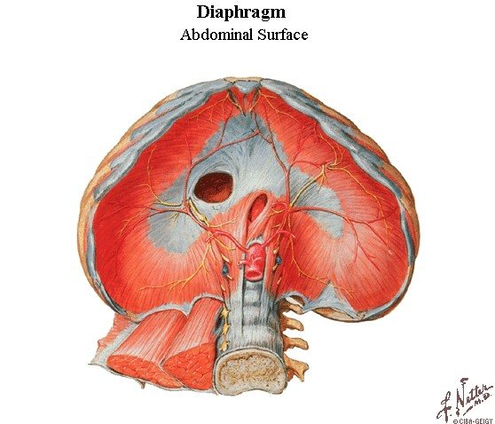
Göğüs ve karın arasında geçmesi gereken üç büyük yapı vardır: aşağıdan gelen venöz kanı kalbe taşıyan VCİ, yukarıdan gelen besini mideye taşıyan özofagus ve kalpten gelen kanı karına taşıyan aorta. Her biri diyaframı ayrı bir açıklıktan ve farklı bir vertebra düzeyinden geçer (Tablo 2.1, Şekil 2.2 ve 2.3).
| Geçit ve düzey | Yeri | İçinden geçenler |
|---|---|---|
| Foramen venae cavae · T8 | Centrum tendineum'un sağ ve orta yaprakları arasında, orta hattın sağında; bir delik, bir hiatus değil | V. cava inferior; sağ n. phrenicus'un uç dalları (sunumda: "nadiren sağ n. phrenicus geçer"); karaciğerden gelen lenf damarları |
| Hiatus oesophageus · T10 | Kas kısmında, sağ krusun lifleri arasında; lifler özofagusun etrafında sola doğru kıvrılıp çaprazlaşarak halkayı oluşturur | Özofagus; ön ve arka trunci vagales (sağ ve sol n. vagus lifleri); a. ve v. gastrica sinistra'nın özofagus dalları; lenf damarları |
| Hiatus aorticus · T12 | Kasın içinde değil arkasında: sağ ve sol kruslar ile lig. arcuatum medianum'un oluşturduğu osteofibröz kemerin altında | Aorta; ductus thoracicus; bazen v. azygos'un başlangıcı |
Tablo 2.1 — Diyaframın üç büyük açıklığı (slayt 12-13).
Düzeyleri hatırlamanın bilinen bir yolu harf saymaktır: "vena cava" 8 harf (T8), "oesophagus" 10 harf (T10), "aortic hiatus" 12 harf (T12). Açıklıklar aşağıdan yukarıya, arkadan öne doğru sıralanır: en arkadaki ve en aşağıdaki aortik hiatus, en öndeki ve en yukarıdaki kaval açıklıktır.
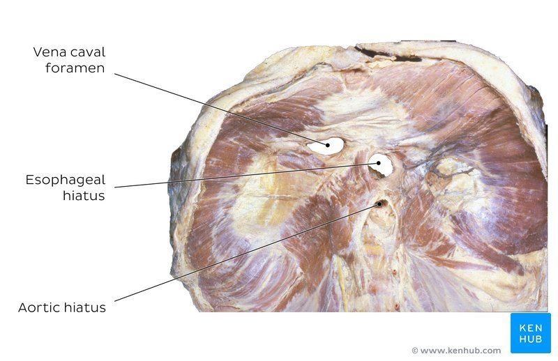
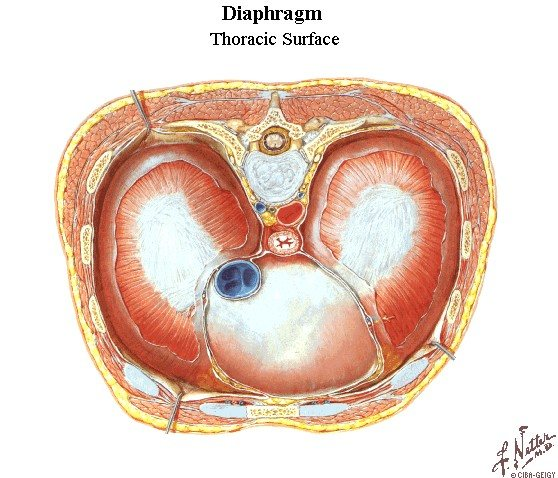
Açıklıklar neden oradadır? Üç açıklığın yerleri rastgele değildir. Her biri, içinden geçen yapının solunum sırasında ne olması gerektiğine uyar. Bunu anlamak düzeyleri ezberlemekten daha kalıcıdır:
Diğer geçişler. Sunum üç büyük açıklığın yanında diyaframı delen ya da arkasından geçen diğer yapıları da sayar:
Slaytta "seviye" olarak işaretlenen üç düzey ve içerikleri sorulmaya en uygun bilgidir: hiatus aorticus T12 (aorta, ductus thoracicus, bazen v. azygos başlangıcı), hiatus oesophageus T10 (özofagus, a. gastrica sinistra dalları, sağ ve sol n. vagus), foramen venae cavae T8 (VCİ, nadiren sağ n. phrenicus). Çeldiricilerde en sık yapılan değişiklik ductus thoracicus'u hiatus oesophageus'a, n. vagus'u hiatus aorticus'a koymaktır. Ductus thoracicus aortayla birlikte, n. vagus özofagusla birlikte geçer.
Sunum bu konuyu bir soruyla açar: "Zayıf sahaları neresidir? Klinik önemi nedir?" Diyaframın zayıf alanları, kasın farklı bölümlerinin birleştiği yerlerde kalan, kas lifinden yoksun ya da kas lifi az üçgen alanlardır. Bu alanlarda göğüs ve karın boşluklarını yalnızca fasya, plevra ve periton ayırır. Karın içi basınç göğüs içi basınçtan sürekli yüksek olduğu için karın organları bu alanlardan göğse doğru itilir (fıtık).
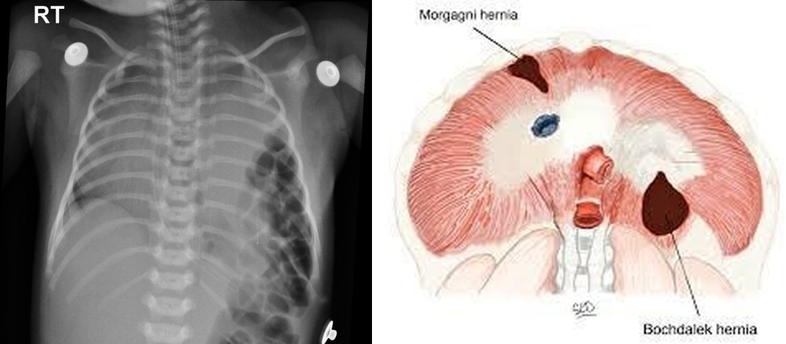
Konjenital diyafram hernisinin asıl sorunu akciğerdir. Defekt, akciğerin dallanmasının sürdüğü dönemde (embriyonik ve psödoglandüler dönemler, 5-17. haftalar) karın organlarının göğse geçmesine izin verir. Zincir şöyle işler: (1) göğse geçen barsaklar, mide ya da dalak, büyümekte olan akciğer tomurcuğuna yer bırakmaz; (2) sıkışan akciğerde hava yolu dallanması ve damar yatağı az gelişir (pulmoner hipoplazi); (3) mediasten karşı tarafa itildiği için karşı akciğer de etkilenir; (4) daralmış damar yatağı ve kaslı arteriollerin direnci doğumdan sonra pulmoner hipertansiyona yol açar. Bebek doğumda ağır solunum sıkıntısıyla gelir. Karın organları göğüste olduğu için karın çökük (skafoid) görünür, göğüste barsak sesleri duyulabilir, kalp sesleri sağa kayar (Şekil 2.4). Tanı çoğu zaman doğumdan önce ultrasonla konur.
Slaytta trigonum sternocostale'den geçen arter "A. epigastrica inferior" olarak yazılmıştır. Bu bir yazım hatası olmalıdır: buradan geçen arter a. epigastrica superior'dur. A. thoracica interna 6. İKA'da ikiye ayrılır; dallarından a. epigastrica superior Morgagni aralığından geçerek rektus kılıfına girer ve göbek civarında a. epigastrica inferior ile anastomoz yapar. A. epigastrica inferior ise a. iliaca externa'dan çıkar ve diyaframa hiç ulaşmaz. Sınavda bu bilgi sorulursa "superior" seçeneği doğrudur. Bir de ayrımı karıştırmayın: Morgagni önde ve çoğunlukla sağda, Bochdalek arkada ve çoğunlukla soldadır.
Diyafram dört embriyonik yapının birleşmesiyle oluşur:
Diyaframın en çok sorulan iki özelliği bu gelişimle açıklanır:
Sunum diyaframın işlevini inspirasyon üzerinden anlatır ve bu tek hareketin hem göğüs hem karın boşluğunda yarattığı sonuçları sıralar:
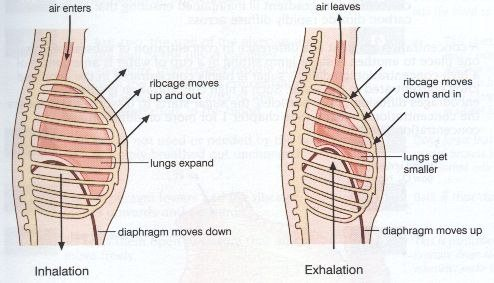
Diyafram alt kaburgaları nasıl kaldırır? Diyaframın kostal lifleri, kaburgalara tutundukları yerin hemen üstünde bir süre göğüs duvarının iç yüzüne yapışık, dikey olarak yükselir. Bu bölgeye apozisyon bölgesi denir. Kasılmanın başında kubbe aşağı iner. Karın organları daha fazla inmeye direnç gösterince centrum tendineum sabit bir dayanak hâline gelir. Bu kez kostal lifler kasılmayı tutundukları alt kaburgalara aktarır ve onları yukarı ve dışa kaldırır (kova sapı hareketine katkı). Aynı anda artan karın içi basınç, apozisyon bölgesinden alt göğüs kafesini içten dışa doğru iter. Diyafram bu yüzden yalnızca bir "piston" değildir, alt göğüs kafesini de genişletir.
Bu mekanizmanın bozulması KOAH'ın önemli bir muayene bulgusunu açıklar. Ağır hiperinflasyonda diyafram aşağı itilmiş ve düzleşmiştir (Kitap 1). Apozisyon bölgesi kaybolur ve kostal lifler dikey değil yatay durur. Yatay lifler kasılınca alt kaburgaları kaldıramaz, aksine içe doğru çeker. İnspirasyonda alt kaburga kenarlarının içe çekilmesine Hoover bulgusu denir. Düzleşen kasın lifleri ayrıca kısalmış olduğu için daha az kuvvet üretir (uzunluk-gerim ilişkisi). Hasta bu kaybı yardımcı kaslarla kapatmaya çalışır (2.8).
Diyafram ve venöz dönüş, vücut pozisyonu. İnspirasyonda göğüs içi basıncın düşmesi ve karın içi basıncın artması, karındaki venöz kanı göğse doğru "pompalar" (torakoabdominal pompa). Ductus thoracicus'taki lenf akımı da aynı mekanizmayla artar. Sırtüstü yatınca karın organları diyaframı yukarı iter, akciğer volümleri azalır. Oturunca ya da ayağa kalkınca diyafram yerçekimiyle aşağı iner. Nefes darlığı olan hastaların dik oturmayı tercih etmesinin bir nedeni budur.
Diyaframın kasılma gücü ilaçlarla da etkilenebilir: metilksantinler (teofilin) diyafram kasının kontraktilitesini artırır. Bu bilgi farmakoloji sınavlarında metilksantinlerle ilgili "yanlış olanı bulun" sorularında doğru bir öncül olarak iki kez yer aldı (2023-2024 S6 ve 2024 S16; Kitap 4).
Hıçkırık (singultus), diyaframın istemsiz, ani kasılmasının hemen ardından glottisin kapanmasıdır ("hık" sesi glottise çarpan havadan gelir). Refleks yayının afferent kolu n. vagus, n. phrenicus ve sempatik lifler, merkezi beyin sapı, efferent kolu n. phrenicus'tur. Günlerce süren inatçı hıçkırık, n. phrenicus'u ya da diyaframı tahriş eden bir süreci (mediastinal tümör, subfrenik apse, perikardit) düşündürmelidir.
Sunuma göre diyaframın siniri n. phrenicus'tur. N. phrenicus plexus cervicalis'in dalıdır ve 4. servikal spinal sinirden, 3. ve 5. servikal spinal sinirlerden de lif alarak oluşur (C3-C5, asıl katkı C4). Boyunda m. scalenus anterior'un ön yüzünde iner (Şekil 2.6). Klinikte bunun en akılda kalan ifadesi "C3, 4 ve 5 diyaframı canlı tutar" sözüdür: C3'ün üstündeki bir omurilik yaralanması diyaframı felç eder ve hasta ancak ventilatörle yaşayabilir; C5'in altındaki bir yaralanmada interkostal kaslar felç olsa da diyafram çalışır ve hasta kendi solunumunu sürdürebilir.
Seyri. Sinir boyunda m. scalenus anterior'un yan kenarında oluşur ve kasın ön yüzünde, prevertebral fasyanın altında, yukarıda lateralden aşağıda mediale doğru eğik olarak iner. Sunumun özetlediği gibi:
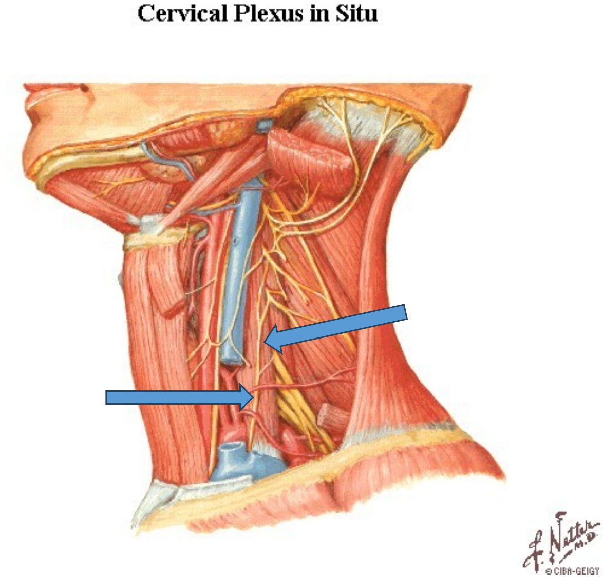
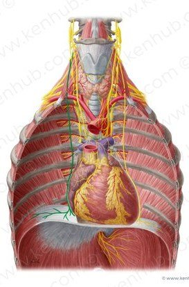
Slayttaki soru: "N. phrenicus hangi yapıları innerve eder?" Cevap dört yapıdır: (1) diaphragma thoracoabdominale (diyaframın tek motor siniri), (2) pericardium (fibröz perikard ve parietal seröz yaprak), (3) plevra (mediastinal plevra ve diyafram plevrasının merkezi kısmı) ve (4) diyaframın abdominal yüzündeki periton (merkezi kısım). N. phrenicus karma bir sinirdir: motor liflerinin yanında önemli miktarda duyu lifi taşır. Kostal plevra ve diyaframın periferik kısmı ise n. phrenicus'tan değil, interkostal sinirlerden duyu alır.
Yansıyan ağrı. N. phrenicus'un duyu aldığı alanlardan (diyaframın merkezi kısmı, perikard, mediastinal plevra) gelen ağrı, aynı spinal segmentlerin (C3-C5) innerve ettiği deri alanına, yani boynun köküne ve omuz başına yansır. Bunun nedeni, iç organdan gelen duyu liflerinin ve omuz derisinden gelen liflerin omurilikte aynı arka boynuz nöronlarına bağlanmasıdır: beyin ağrıyı daha sık uyarıldığı alana, deriye "yerleştirir". Bu yüzden subfrenik apse, dalak rüptürü (sol omuz ağrısı, Kehr bulgusu), safra kesesi iltihabı, perikardit ya da diyafram plevrasının iltihabı omuz ağrısı yapabilir. Laparoskopiden sonraki omuz ağrısı da karın içine verilen karbondioksitin diyaframı tahriş etmesindendir. Diyaframın periferik kısmının tahrişi ise alt interkostal sinirler yoluyla alt göğüs ve karın duvarına yansır. Alt lob pnömonisi geçiren bir çocuğun karın ağrısıyla gelmesi bu yüzdendir.
N. phrenicus felci. Sinir boyunda, göğüste ya da mediastende birçok nedenle zedelenebilir: kalp cerrahisi, mediastinal tümörler, akciğer kanseri, boyun travması, interskalen sinir bloğu (blok sinirin geçtiği m. scalenus anterior'a çok yakın yapıldığı için neredeyse her zaman geçici, aynı taraflı bir frenik blok yapar). Felçli hemidiyafram kasılamaz. Göğüs grafisinde yüksekte durur. İnspirasyonda göğüs içi basınç negatifleşince felçli kubbe pasif olarak yukarı emilir: diğer tarafın aksine yukarı hareket eder (paradoks hareket). Floroskopide hastaya burnundan hızla nefes çektirilerek bu paradoks hareket gösterilir ("sniff" testi). Tek taraflı felç dinlenimde genellikle iyi tolere edilir, çift taraflı felç ağır nefes darlığına ve ortopneye yol açar. Kişilerin bir kısmında C5'ten (genellikle n. subclavius aracılığıyla) gelen bir aksesuar frenik sinir vardır. Boyunda n. phrenicus kesilse bile bu sinir diyaframın bir kısmını çalıştırabilir.
Diyaframın damarları ve lenfatikleri. Üst yüzünü a. thoracica interna'nın dalları olan a. pericardiacophrenica ve a. musculophrenica ile aorta thoracica'dan çıkan aa. phrenicae superiores; alt yüzünü karın aortasının ilk dalları olan aa. phrenicae inferiores (en büyük katkı); çevresini alt interkostal arterler ve a. subcostalis besler. Venler arterlere eşlik eder ve v. thoracica interna'ya, v. azygos sistemine ve VCİ'ye dökülür. Diyaframın göğüs yüzündeki lenf düğümleri (nodi phrenici superiores) parasternal ve arka mediastinal düğümlere, karın yüzündekiler lomber düğümlere drene olur. Karın yüzündeki lenf damarlarının diyafram üzerinden göğüs düğümlerine bağlanması, subfrenik bir apsenin ya da karın içindeki sıvının plevral efüzyona yol açabilmesini açıklar.
Her interkostal aralıkta (İKA) karın duvarındaki gibi üst üste üç kas katmanı bulunur. Dıştan içe: m. intercostalis externus, m. intercostalis internus ve en içte m. intercostalis intimus (Şekil 2.7). En içteki katmanın ön ve arka uzantıları olarak m. transversus thoracis ve mm. subcostales de bu gruba girer. İnterkostal sinir ve damarlar ikinci ile üçüncü katman arasında ilerler (Bölüm 3.2).
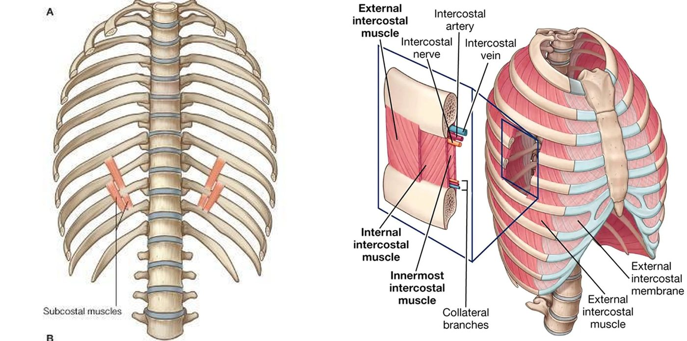
Slayttaki kutu: "Bu üç kasın lif seyri aynıdır. Fonksiyonları da aynıdır. Kaburgaları aşağı çekerler. Ekspirasyona yardım ederler." Bu üç kas mm. intercostales interni, mm. intercostales intimi ve mm. subcostales'tir. Eksternaller ise tek başına zıt yönde uzanır ve kaburgaları yukarı kaldırır. Aynı slaytta intimi için sarıyla işaretlenen satır: "interkostal aralığın orta kısmında yer alırlar".
Aynı kaburgaya tutunan iki kas nasıl zıt iş yapar? Kaldıraç modeli. İki komşu kaburgayı arkada omurgaya menteşelenmiş, önde sternumla birbirine bağlanmış iki kol olarak düşünelim (Şekil 2.8). Bir interkostal lif kasıldığında iki kaburgayı birbirine eşit kuvvetle çeker. Kuvvetler eşittir, ama etkileri eşit değildir: bir kaburgayı döndüren etki (tork), kuvvetin menteşeye (omurgaya) olan uzaklığıyla çarpımıdır. Eksternal interkostal lif öne-aşağı uzandığı için alttaki kaburgaya, üstteki kaburgaya tutunduğu noktadan daha önde, yani omurgadan daha uzak bir noktada tutunur. Alttaki kaburgayı yukarı döndüren kol daha uzundur ve bu tork kazanır: kaburgalar birlikte yükselir. İnternal interkostal lif ise arkaya-aşağı uzanır. Üstteki kaburgaya daha uzak noktada tutunur. Üstteki kaburgayı aşağı döndüren kol daha uzundur: kaburgalar iner.
Bu model bir istisnayı da açıklar. İnternal interkostallerin sternumun hemen yanındaki, kıkırdaklar arasındaki kısmı (parasternal ya da interkondral kısım) aslında inspiratuvardır. Bu bölgede kıkırdaklar omurgaya değil sternuma göre döner, yani menteşe öndedir. Menteşe yer değiştirince aynı lif yönü ters etki yapar ve kıkırdakları yükseltir. Netter'in solunum kasları levhasında (Şekil 2.12) bu kısım "inspirasyonun ana kaslarından biri" olarak gösterilir.
İnterkostal kasların ikinci işi: aralıkları sertleştirmek. İnspirasyonda göğüs içi basınç negatifleşir. Kaslar aralıkları gergin tutmasaydı yumuşak interkostal aralıklar her inspirasyonda içe çekilir, öksürükte ve ıkınmada dışa doğru balonlaşırdı. Hava yolu tıkanıklığı olan küçük çocuklarda göğüs duvarı henüz yumuşak olduğu için bu "çekilmeler" (interkostal, subkostal, suprasternal retraksiyonlar) solunum sıkıntısının önemli bir bulgusudur. C5'in altındaki omurilik yaralanmalarında da interkostal kaslar felç olduğu için üst göğüs inspirasyonda içe çekilir.
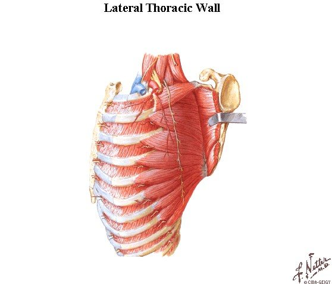
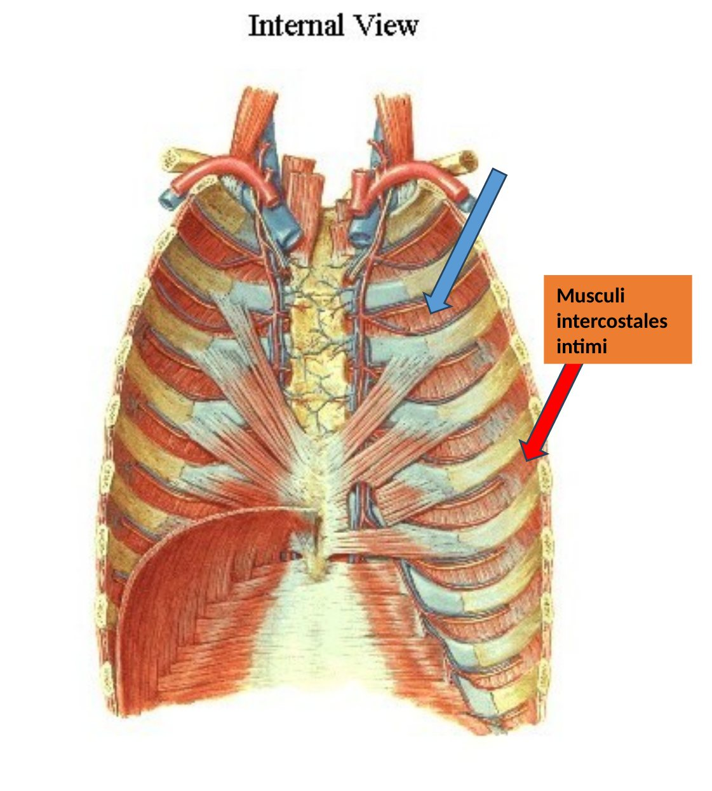
Göğüs kafesinin arka yüzündeki kaslar. Sunum interkostal kasların listesine üç kas daha ekler:
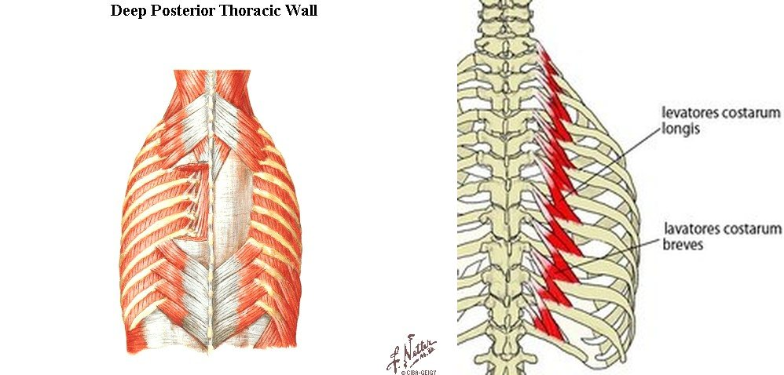
Sunum bu kasların hepsinin innervasyonunu nn. intercostales ve n. subcostalis'e bağlar. Bu genel kural doğrudur ve tek istisnası mm. levatores costarum'dur: bu kaslar spinal sinirlerin arka dallarıyla (C8-T11 rr. posteriores) innerve edilir, çünkü gelişimsel olarak sırt kaslarına aittir. Tablo 2.2 göğüs duvarı kaslarını özetler.
| Kas | Uzanım | Lif yönü / yer | Sinir | Solunumdaki işlevi |
|---|---|---|---|---|
| M. intercostalis externus | Üst kaburganın alt kenarı → alt kaburganın üst kenarı; önde membrana intercostalis externa | Öne-aşağı; tüberkülden kostokondral birleşime | Nn. intercostales | Kaburgaları kaldırır (inspirasyon) |
| M. intercostalis internus | Alt kaburganın üst kenarı → üst kaburganın alt kenarı; arkada membrana intercostalis interna | Arkaya-aşağı; sternumdan angulus costae'ya | Nn. intercostales | İnterosseöz kısım indirir (ekspirasyon); interkondral kısım kaldırır (inspirasyon) |
| M. intercostalis intimus | Komşu kaburgaların iç yüzleri | İnternalle aynı; aralığın orta (yan) kısmında | Nn. intercostales | İndirir (ekspirasyon) |
| Mm. subcostales | Alt kaburgaların iç yüzü, bir-iki aralık atlayarak | İnternalle aynı; arkada, yalnızca alt aralıklarda | Nn. intercostales | İndirir (ekspirasyon) |
| M. transversus thoracis | Sternumun alt kısmı ve xiphoid'in arka yüzü → 2-6. kıkırdaklar | Ön duvarın iç yüzü; m. transversus abdominis ile devamlı | Nn. intercostales (2-6) | Kıkırdakları indirir (zayıf, ekspirasyon) |
| Mm. levatores costarum | C7-T11 transvers çıkıntıları → bir ya da iki alttaki kaburga | Toraksın arka dış yüzü | C8-T11 arka dalları | Kaburgaları kaldırır (küçük katkı) |
| M. serratus posterior superior | Lig. nuchae, C7-T3 dikenleri → 2-5. kaburgalar | Aşağı-yana | Nn. intercostales (2-5) | Kaburgaları kaldırır (küçük katkı) |
| M. serratus posterior inferior | T11-L2 dikenleri → 9-12. kaburgalar | Yukarı-yana | T9-T12 ön dalları | Alt kaburgaları indirir ve sabitler |
Tablo 2.2 — Göğüs duvarının kasları (slayt 21-26).
Sunum iki grup kas daha sayar. Birinci grup göğüs ve boyun kaslarıdır: m. pectoralis major, m. pectoralis minor, m. serratus anterior, m. sternocleidomastoideus, m. subclavius ve mm. scaleni (anterior, medius, posterior). İkinci grup karın kaslarıdır: m. rectus abdominis, m. obliquus externus abdominis, m. obliquus internus abdominis, m. transversus abdominis ve m. quadratus lumborum. Slayttaki soru şudur: "Peki hangi kaslar inspirasyona yardım eder?"
İnspirasyona yardım edenler birinci gruptur: m. sternocleidomastoideus (baş sabitken sternumu ve klavikulayı kaldırır), mm. scaleni (1. ve 2. kaburgaları kaldırır ve sabitler), m. pectoralis major ve minor ile m. serratus anterior (kol ve skapula sabitken kaburgaları kaldırır) ve m. subclavius (katkısı küçüktür). Karın kasları ise ekspirasyon kaslarıdır: karın içi basıncı artırarak diyaframı yukarı iterler ve alt kaburgaları aşağı çekerler. M. quadratus lumborum 12. kaburgayı sabitler: inspirasyonda diyaframa sağlam bir dayanak verir, zorlu ekspirasyonda kaburgayı aşağı çeker.
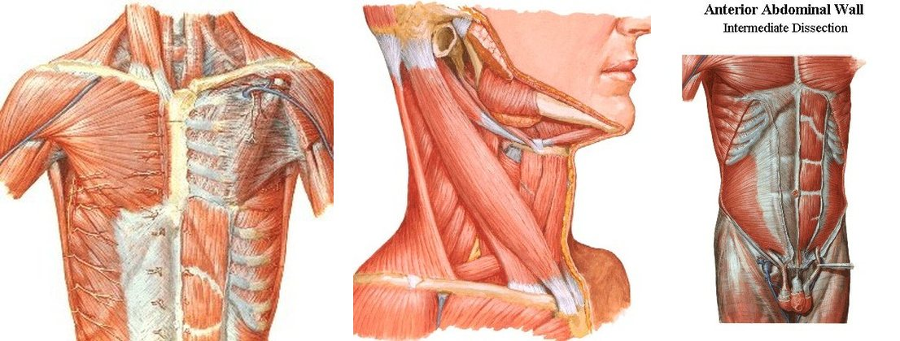
Yardımcı kaslar neden ancak zorlu solunumda devreye girer? Bir kas kasıldığında iki ucunu birbirine yaklaştırır. Hangi ucun hareket edeceğini, hangi ucun sabit tutulduğu belirler. M. pectoralis minor normalde kaburgalara tutunup skapulayı aşağı-öne çeker. Hasta ellerini bir masaya ya da dizlerine dayayıp omuz kuşağını sabitlediğinde aynı kas ters yönde çalışır ve kaburgaları yukarı çeker. Ağır KOAH'lı ya da astım atağındaki hastanın öne eğilip kollarına dayanarak oturması ("tripod" pozisyonu) tam olarak bu yüzdendir. Boyunda m. sternocleidomastoideus'un ve skalenlerin belirgin kasılması, burun kanatlarının solunuma katılması ve supraklaviküler çukurların inspirasyonda çökmesi, solunum işinin arttığını gösteren önemli muayene bulgularıdır. (Skalenler aslında sessiz solunumda da hafifçe kasılır, ama asıl katkıları zorlu solunumdadır.)
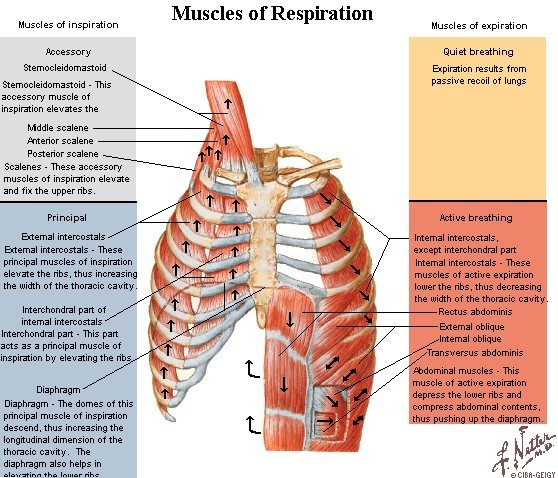
Tablo 2.3 bir solunum döngüsünün dört evresinde hangi kasların çalıştığını özetler. Tablonun mantığı basittir: sessiz solunumda yalnızca inspirasyon aktiftir, ekspirasyon elastik geri çekimle olur; solunum zorlaştıkça önce inspirasyona yardımcı kaslar, sonra ekspirasyon kasları devreye girer.
| İnspirasyon | Ekspirasyon | |
|---|---|---|
| Sessiz solunum | Diyafram (ana kas), mm. intercostales externi, interkondral internal interkostaller, skalenler | Pasif: akciğer ve göğüs duvarının elastik geri çekimi, alveollerin yüzey gerilimi |
| Zorlu solunum | Yukarıdakilere ek olarak m. sternocleidomastoideus, mm. pectorales, m. serratus anterior, m. subclavius, mm. levatores costarum, m. serratus posterior superior, sırt ekstansörleri (torakal kifozu azaltarak hacmi artırır) | Karın kasları (m. rectus abdominis, mm. obliqui, m. transversus abdominis), mm. intercostales interni (interosseöz) ve intimi, mm. subcostales, m. transversus thoracis, m. serratus posterior inferior, m. quadratus lumborum; öksürükte m. latissimus dorsi |
Tablo 2.3 — Solunum döngüsünde çalışan kaslar.
Doğru: B. N. vagus'lar göğüste özofagusun çevresinde bir pleksus (plexus oesophageus) yapar ve bu pleksustan oluşan ön ve arka trunci vagales özofagusla birlikte T10 düzeyindeki hiatus oesophageus'tan karına geçer. Aynı açıklıktan a. ve v. gastrica sinistra'nın özofagus dalları ve lenf damarları da geçer.
A yanlış: ductus thoracicus aortayla birlikte T12'deki hiatus aorticus'tan geçer. C yanlış: VCİ centrum tendineum'daki foramen venae cavae'dan (T8) geçer. D yanlış: splanknik sinirler kendi tarafındaki krusu delerek geçer, bir açıklığı kullanmaz. E yanlış: v. hemiazygos sol krusu delerek göğse girer.
Doğru: C. Foramen venae cavae T8 düzeyinde, centrum tendineum'un içinde bir deliktir. Diyafram kasılınca kas lifleri tendonu her yönden gerer. VCİ'nin duvarı açıklığın kenarına yapışık olduğu için açıklık sıkışmaz, açık kalır. İnspirasyonda göğüs içi basınç düşüp karın içi basınç arttığından karındaki venöz kan göğse doğru akar.
A yanlış: T12 hiatus aorticus'un düzeyidir. B yanlış: sağ krusun kas lifleri arasındaki açıklık hiatus oesophageus'tur (T10). D yanlış: ductus thoracicus hiatus aorticus'tan geçer. E yanlış: buradan geçebilen sinir sağ n. phrenicus'un uç dallarıdır; sol n. phrenicus sol kubbenin kas liflerini deler.
Doğru: D. Kostal plevra göğüs duvarını döşeyen plevradır ve duyusunu duvarın sinirlerinden, yani interkostal sinirlerden alır. Diyafram plevrasının çevre kısmı da interkostal sinirlerle innerve edilir.
A, B, C ve E, sunumun "N. phrenicus hangi yapıları innerve eder?" sorusunun cevabıdır: diyafram (tek motor siniri), perikard, plevra (mediastinal ve diyafram plevrasının merkezi kısmı) ve diyaframın karın yüzündeki periton. Bu alanların tahrişi aynı segmentlerin (C3-C5) deri alanına, omuz başına yansıyan ağrı yapar.
Doğru: C. Trigonum sternocostale diyaframın sternal ve kostal parçaları arasındaki ön zayıf alandır. A. thoracica interna'nın uç dalı olan a. epigastrica superior (ve eşlik eden ven), karaciğerin konveks yüzünden ve karın duvarından gelen lenf damarları buradan geçer. (Sunumda arter "inferior" diye yazılmıştır; doğrusu superior'dur.)
A yanlış: kostal ve lumbal parçalar arasındaki alan trigonum lumbocostale'dir (Bochdalek). B yanlış: en sık konjenital diyafram hernisi Bochdalek hernisidir; Morgagni hernileri konjenital hernilerin yalnızca küçük bir kısmıdır. D yanlış: böbreğin üst-arka kısmı Bochdalek üçgenine oturur ve böbrek kapsülü burada plevrayla temas eder. E yanlış: Morgagni hernileri çoğunlukla sağdadır, çünkü solda kalp ve perikard defekti kapatır; soldaki taraf baskınlığı Bochdalek hernisinin özelliğidir.
Doğru: A. Tablo konjenital diyafram hernisidir ve en sık tip, sol arka-yandaki trigonum lumbocostale'den (Bochdalek) gelişir. Sağ pleuroperitoneal kanal soldan önce kapandığı ve sağ tarafı karaciğer tıkadığı için defekt çoğunlukla soldadır. Göğse geçen barsaklar karını boşaltır (skafoid karın), sol akciğerin gelişmesini engeller ve mediastini sağa iter.
B yanlış: Morgagni hernisi öndedir, nadirdir ve genellikle belirtisiz kalıp erişkinde rastlantısal bulunur. C yanlış: hiatal herniler kazanılmış ve erişkin hernileridir. D ve E yanlış: bu açıklıklar içlerinden geçen yapılarla dolu, sağlam kenarlı açıklıklardır ve konjenital fıtık yeri değildir.
Doğru (yanlış ifade): E. İnterkostal ven, arter ve sinir ikinci ile üçüncü katman arasında, yani m. intercostalis internus ile m. intercostalis intimus arasında, sulcus costae içinde ilerler. Eksternal kas bu demetin dışında kalır.
A doğru: lifler öne ve aşağı doğrudur. B doğru: kas önde kostokondral birleşimde biter, kıkırdaklar arasında yerini membrana intercostalis externa alır (son iki aralıkta kas sonuna kadar devam eder). C doğru: kaldıraç modeline göre lif alttaki kaburgaya omurgadan daha uzakta tutunduğu için kaburgaları kaldırır. D doğru: bütün interkostal kaslar nn. intercostales ile innerve edilir.
Doğru: E. Karın kasları (m. transversus abdominis, m. rectus abdominis, oblik kaslar) karın içi basıncı artırıp diyaframı yukarı iterek ve alt kaburgaları aşağı çekerek ekspirasyona yardım eder.
A, B, C ve D yardımcı inspirasyon kaslarıdır. M. sternocleidomastoideus baş sabitken sternumu kaldırır. M. scalenus anterior 1. kaburgayı kaldırır ve sabitler. M. pectoralis minor ve m. serratus anterior, omuz kuşağı sabitlendiğinde (hastanın kollarına dayanması) kaburgaları yukarı çeker.
Doğru: B. Bir kas lifi iki kaburgayı eşit kuvvetle çeker, ama dönme etkisi kuvvetin menteşeye (omurgaya) uzaklığına bağlıdır. İnternal lifler arkaya-aşağı uzandığı için üstteki kaburgaya daha önde, yani omurgadan daha uzakta tutunur. Üstteki kaburgayı indiren tork baskın olur ve kaburgalar iner.
A yanlış: bu, eksternal interkostal kasın durumudur ve kaburgaları kaldırır. C yanlış: interkostal kaslar nn. intercostales ile innerve edilir. D yanlış: interosseöz kısım kaburgalar arasındadır; sternuma yakın interkondral kısım ise menteşe sternuma kaydığı için tersine kaburgaları kaldırır. E yanlış: kasın işlevi pasif gerilmeyle değil, kendi kasılmasıyla ortaya çıkar.
Doğru: A. N. phrenicus boyunda m. scalenus anterior'un ön yüzünde iner. Bu kasın hemen yakınına yapılan interskalen blok sinire de yayılır ve aynı taraf diyafram geçici olarak felç olur. Felçli kubbe kasılamaz; inspirasyonda göğüs içi basınç negatifleşince pasif olarak yukarı emilir (paradoks hareket, "sniff" testi).
B yanlış: n. vagus'un diyaframa motor lifi yoktur; felcinde ses kısıklığı (n. laryngeus recurrens) ve yutma güçlüğü beklenir. C yanlış: tek bir interkostal sinirin bloğu diyaframı felç etmez; interkostal sinirler diyaframın yalnızca çevre kısmının duyusunu taşır. D yanlış: n. accessorius m. sternocleidomastoideus ve m. trapezius'u innerve eder. E yanlış: sempatik gövdenin blokajı Horner sendromu yapar (stellat ganglion), diyafram felci yapmaz.
Doğru: D. Sessiz ekspirasyon pasiftir: kaslar gevşer, akciğerin ve göğüs duvarının elastik geri çekimi havayı dışarı çıkarır. Diyafram bu sırada kasılmaz, gevşer.
A, B, C ve E sunumun saydığı olaylardır: diyafram ve karın kasları birlikte kasılınca (özellikle glottis kapalıyken) karın içi basınç çok yükselir ve mesane, rektum, mide ya da uterus dışarıdan sıkıştırılır.